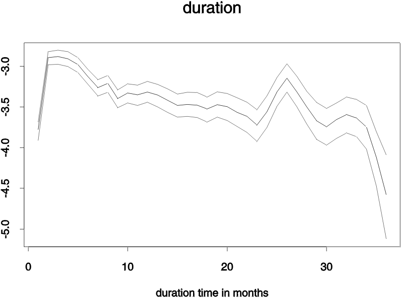
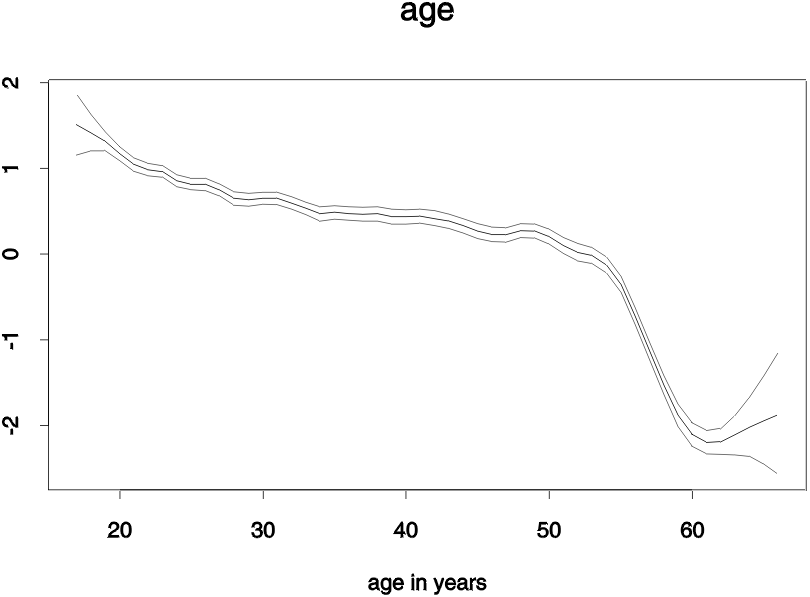
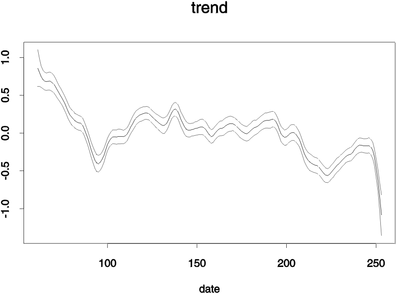
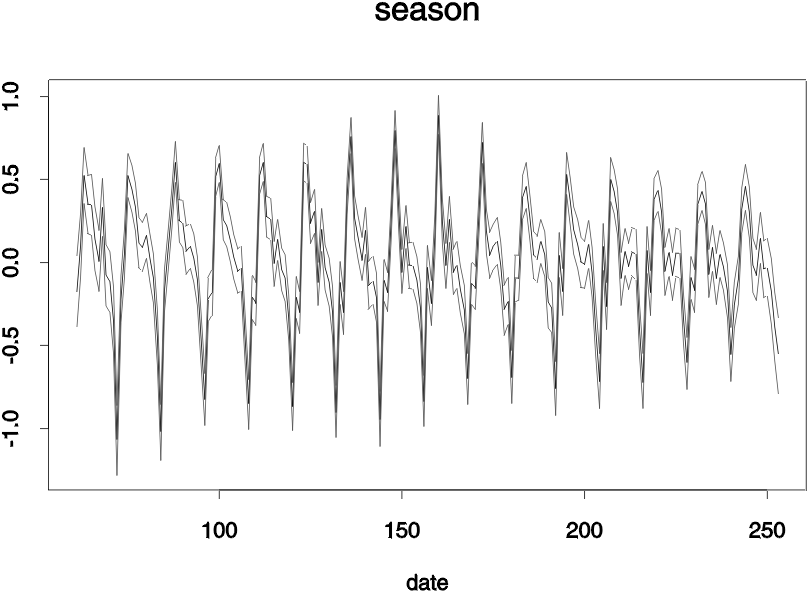
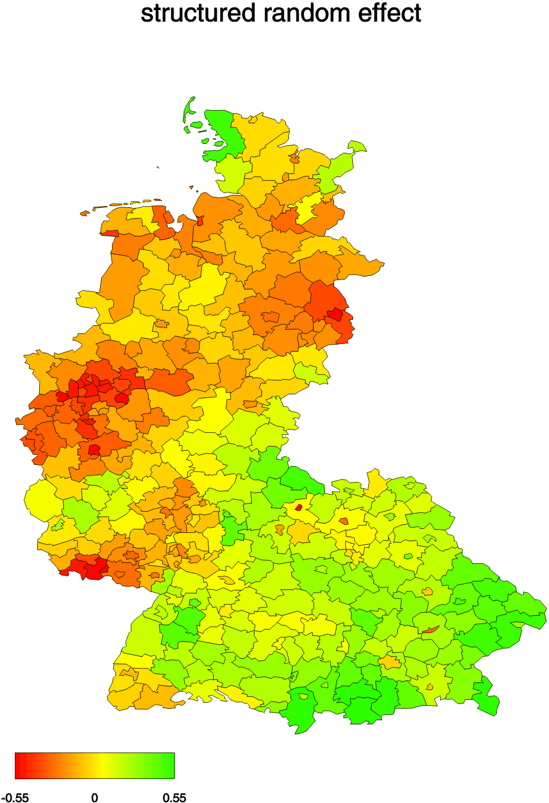
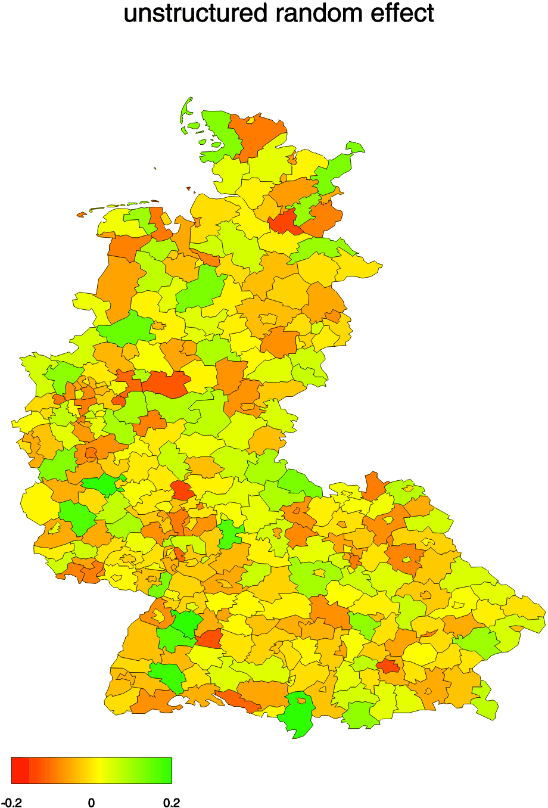

|
|
| Examples - Study on unemployment durations |
We estimated a logit model for the probability that an unemployed gets a new job at duration time t with
predictor
p = f1(t)+f2Trend(D)+f3Season(D)+f4(A)
+f5structured(C)+f6unstructured(C)
where f1(t) and f4(A) are nonlinear effects of duration time t and age A,
f2Trend(D) and f3Season(D) are
a nonlinear trend and a time varying seasonal effect of calendar time D, and f5structured(C) and
f6unstructured(C) are
structured and unstructured spatial random effects of the district C in which the unemployed live.
A separate analysis is carried out for men and women, whereby here results are given only for men.
The estimation (for males) has been carried out in BayesX using the following program code:
delimiter = ;
dataset m;
m.infile , maxobs=120000 using c:\data\male.raw;
map ma;
ma.infile using c:\maps\westgermany.bnd;
bayesreg b;
b.outfile = c:\results\male;
b.regress y = time(rw2,min=1,max=5) + date(rw2,min=2,max=6) + date(season,period=12,min=3,max=8)
+ age(rw2,min=2,max=6) + region(spatial,map=ma) + region(random) , maxint=300 burnin=2000
iterations=52000 step=50 family=binomial using m;
delimiter = return;
The second and the third statement in the program code are used to create a dataset object 'm' and to read in the data, which are stored
in the external ASCII-file 'c:\data\male.raw'. In the following two statements a map object 'ma' is created and
the map of West Germany is stored therein. The map of Germany is used later for estimating the structured spatial random effect
f5structured(C).
Finally, a so called bayesreg object is created and a Bayesian regression model is estimated using the regress command
of bayesreg objects.
Estimated effects can be found in the following Figures and maps. They can be created using
the graphics capabilities of BayesX.






Reference
Fahrmeir, L., Lang, S. (2001)
Bayesian Inference for Generalized Additive Mixed Models Based on Markov Random
Field Priors.
Applied Statistics (JRSS C), 50, 201-220.
|
|